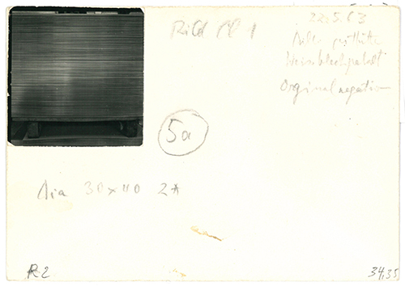

Also, was mich überhaupt so faszinierte mit den Experimenten, das war immer zu sehen, was passiert dann.
Monika von Boch
Suche Dir eine Struktur, die aus vielen Linien besteht. Mache ein Foto oder wähle aus der Galerie aus. Erforsche, was sich bei der Bearbeitung verändert.
Suche Dir eine Struktur, die aus vielen Linien besteht. Mache ein Foto oder wähle aus der Galerie aus. Erforsche, was sich bei der Bearbeitung verändert.
experiment
1/7 – Monika von Boch, Weißblech-Serie, Ursprungsnegativ, 1963, Silbergelatinepapier / Spanplatte, 59,9 x 49,9 cm
2/7 – Monika von Boch, Weißblech-Serie, I + II und I + II, rechtwinklig aufeinandergelegt, 1966, Silbergelatinepapier / Spanplatte, 60 x 49,8 cm
3/7 – Monika von Boch, Weißblech-Serie XIX a, 1968, Silbergelatinepapier / Papier / Spanplatte, 59,8 x 49,9 cm
4/7 – Monika von Boch, Weißblech-Serie, VII. 6, 1970, Silbergelatinepapier / Spanplatte, 59,4 x 49,8 cm
5/7 – Monika von Boch, Weißblech-Serie II 1a 5, 1970, Silbergelatinepapier / Spanplatte, 59.4 x 49,8 cm
6/7 – Monika von Boch, Weißblech-Serie XVIII a 2, 1970, Silbergelatinepapier / Aluminiumplatte, 59,5 x 49,5 cm
7/7 – Monika von Boch, Weißblech-Serie XVIII a1+b1+c1+x9, 1970, Silbergelatinepapier / Aluminium, 59,5 x 49,5 cm
An der “Weißblechserie” hat Monika von Boch über zehn Jahre hinweg gearbeitet.
Mehr...
Alle Bilder dieser mehr als 100-teiligen Reihe haben ihren Ursprung in zwei gleichen Negativen und dennoch sieht jedes völlig anders aus. Auf den beiden Ursprungsbildern ist ein Stapel dünner Bleche zu sehen, die auf einer Palette liegen.

1/2 – Monika von Boch, Weißblechserie, Karteikarte mit Ursprungsbild, 1963
2/2 – Monika von Boch, Weißblechserie, Zwei Abzüge des Ursprungsnegativs, 1963
Monika von Boch tut zunächst das Naheliegende. Im ersten Arbeitsschritt beschneidet sie das Motiv an den Rändern und lässt weg, was vom Wesentlichen ablenkt: die Holzpalette und den Umraum. Dann dreht sie das Bild um 90 Grad, sodass die Linien der gestapelten Bleche nicht mehr liegen, sondern stehen. Sie probiert unterschiedliche Belichtungen aus, kehrt positiv in negativ um und arbeitet mit verschiedenen Helligkeiten und Kontrasten. In der so genannten “Sandwich-Methode” belichtet sie zwei Negative, die kreuzweise übereinander gelegt werden. So entsteht ein gitterförmiges Muster. Immer wieder greift sie kleine und kleinste Bildausschnitte heraus, die sie extrem vergrößert. Häufig kombiniert sie mehrere Techniken und experimentiert mit Fotochemikalien und unterschiedlichen Fotopapieren. Die Arbeitsprozesse sind kompliziert und zeitaufwendig. Das “Finden und Verlieren”, sagt Monika von Boch, ist dabei für ihre Arbeit ganz wichtig. Auf der Suche nach dem “verborgenen Bild” trifft sie ganz gezielte Entscheidungen, wenn sie zum Beispiel ein Detail auswählt und vergrößert. Andere Bilder entstehen, indem Sie dem Zufall Raum gibt. “Also, was mich überhaupt so faszinierte mit den Experimenten", sagt sie, "das war (...) immer zu sehen, was passiert dann. Und dann habe ich immer, wenn irgendwas total daneben ging, gedacht, da kann man doch was draus machen und dann habe ich eben, in ich weiß nicht wie vielen Richtungen, weitergemacht.” Im abstrakten Liniengebilde der Bleche gelingt es Monika von Boch, verborgene Formen aufzuspüren, die wie natürliche Organismen oder seltsame Figuren aussehen, manche sehen wie Buchstaben, Architekturen oder Landkarten aus, manche sind ganz flach und fein gezeichnet, andere scheinen sich wie ein Relief abzuheben, das man anfassen möchte.
Monika von Bochs Archiv zur Weißblechserie, Saarlandmuseum Saarbrücken